------------------------------
Primeval Forth on the Web
------------------------------
Brad Nelson
April 25, 2026
A tremendous community works to keep IBM 1130 history alive.
Thank you Bob Flanders, Carl Claunch, Charles Anthony, Paul Hardy!
And the many archivists out there!
------------------------------------------------------------
https://bitsavers.org/pdf/ibm/punchedCard
/Keypunch/029/A24-3332-3_29_Reference_Man.pdf
https://bitsavers.org/pdf/ibm/punchedCard
/Keypunch/029/225-3357-3_29_FE_Maint_Man_Nov70.pdf
https://bitsavers.org/pdf/ibm/1130
/A26-5717-0_1130_Operating_Procedures_1968.pdf
https://www.tnmoc.org/ibm1130
https://www.forth.org/svfig/kk/02-2018-Claunch.pdf
https://www.forth.com/resources/forth-programming-language/
https://github.com/monsonite/1968-FORTH
https://gitlab.com/unused0/protoforth
https://groups.google.com/g/ibm1130/c/U46_pE5-iQk
http://media.ibm1130.org/E0024.pdf
http://media.ibm1130.org/E0010.pdf
https://www.columbia.edu/cu/computinghistory/1130.html
https://www.columbia.edu/cu/computinghistory/2250.html
IBM 1130 Forth - The first "FORTH"
----------------------------------
* Evolution of Chuck's earlier interpreters
* First Forth called "FORTH" - 1968
- Due to the limitations of the DMS file system
* Chuck kept a listing!
- Bob Flanders corresponded with Chuck in 2011
- Received 11 pages of assembler and 5 pages of Forth
- Charles Anthony got it working in 2024 in simh
- Paul Hardy made me aware of it in 2024
@forth_page1.png
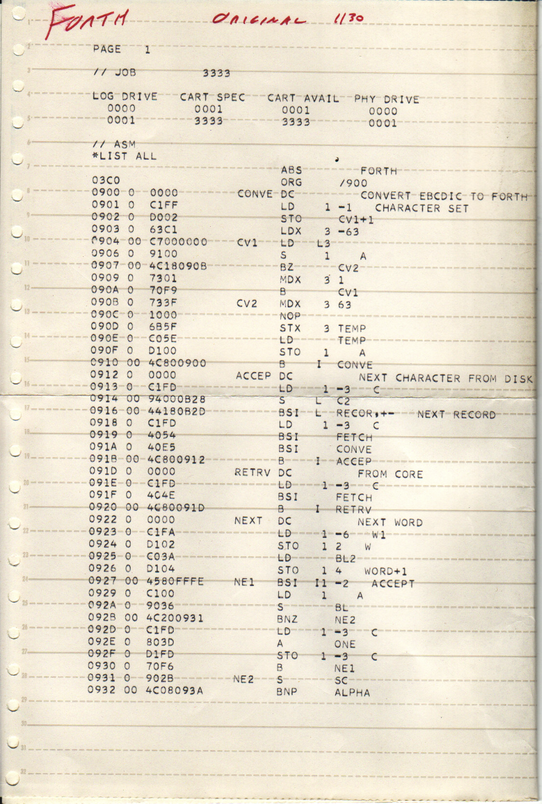
@forth_page2.png
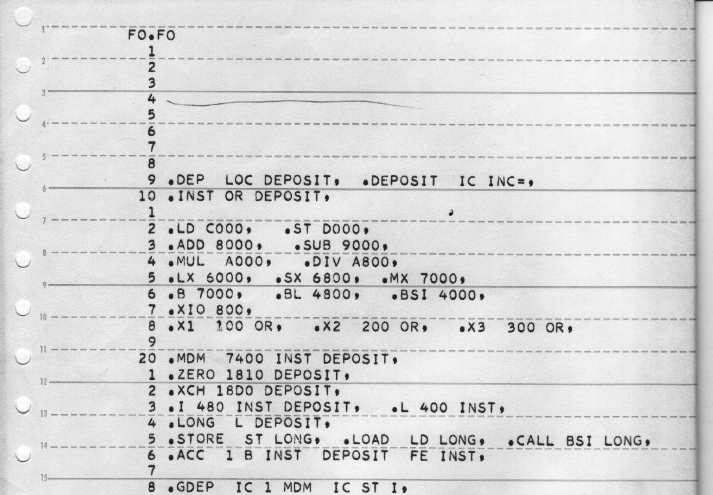
Chuck's IBM 1130
----------------
* Mohasco Industries - 1968
* IBM 1130 minicomputer
- 16-bit CPU, 8k RAM, disk, keyboard, printer,
card reader/punch, Fortran
- 2250 graphic display
@ibm1130_room.png
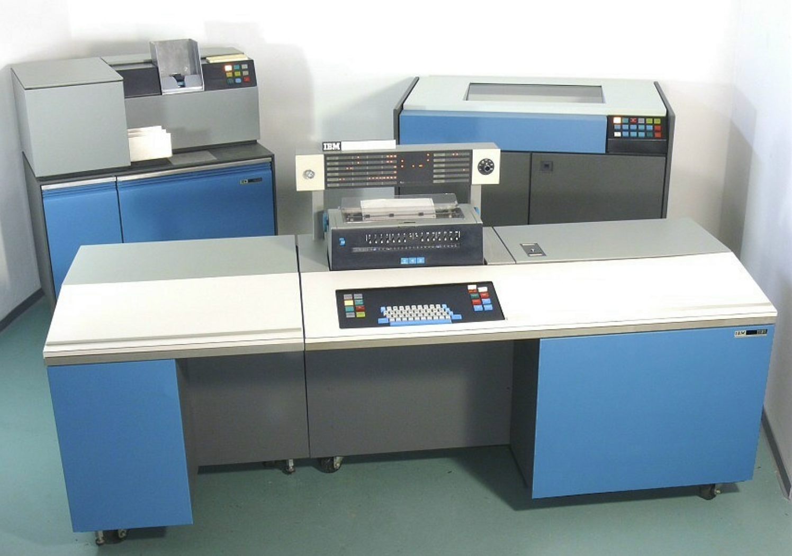
@ibm1130_whole.png
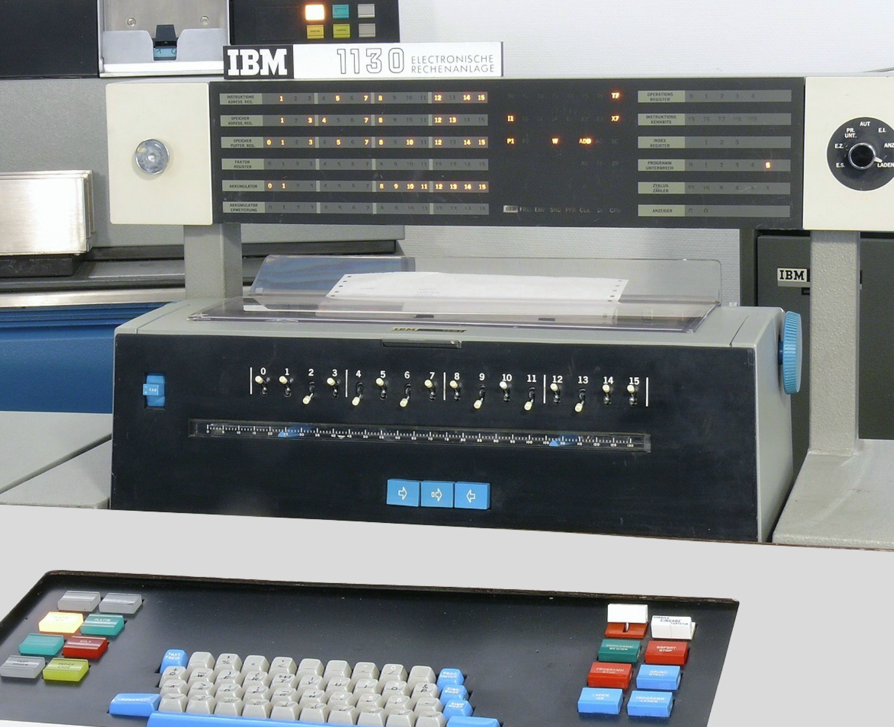
@ibm2250_unit.png
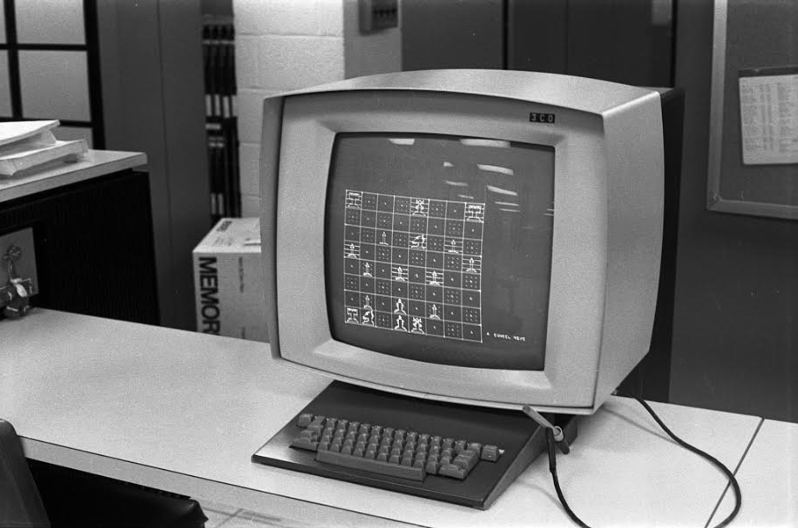
@ibm2250.png
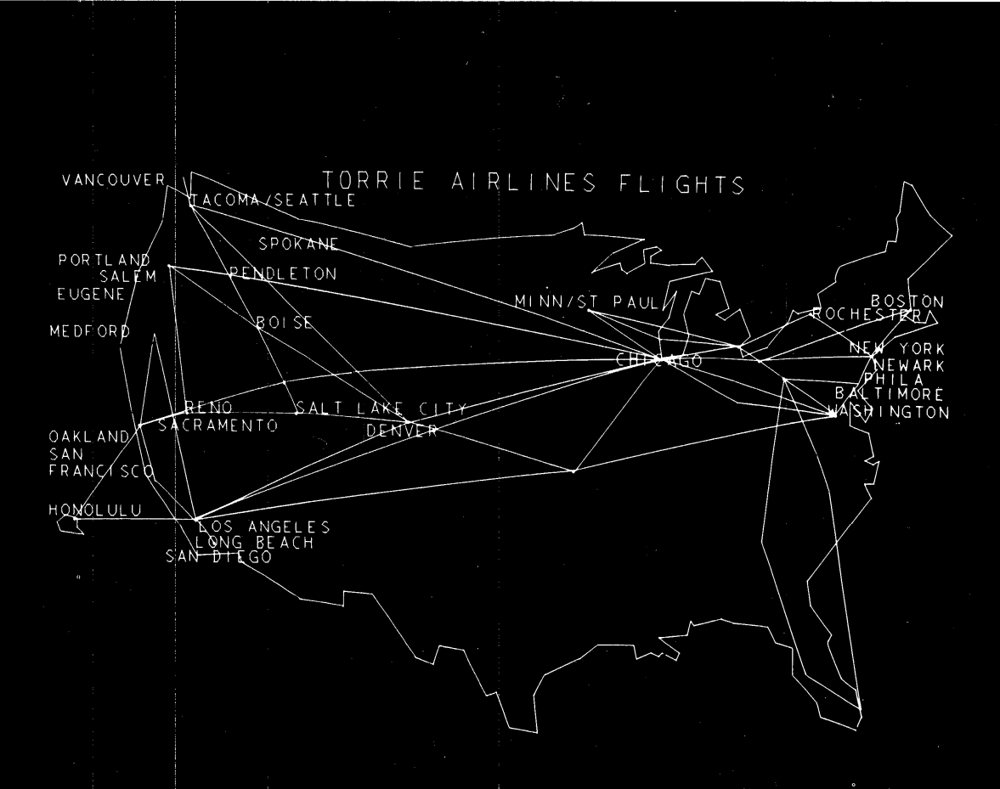
My Goals
--------
* Emulate 1130 Forth on the Web
- Capture the experience of 1130 Forth
* Understand Forth at this stage
- What survived into modern Forth
- What survived into colorForth
Emulator
--------
* HTML, CSS, and JavaScript
* Emulate lights, buttons, switches, keyboard
* Emulate the CPU and I/O system
- Focus on Chuck's Forth
- Simplify I/O devices
- Avoid DMS dependency
IBM 1130 CPU
------------
* Registers:
* 15-bit IAR
* 16-bit ACC + 16-bit EXT
* Carry and Overflow flags
* 3 in-core index registers XR1, XR2, XR3
* Twos-complement math
* Double instructions mostly assume 32-bit alignment
* Interrupt levels 0-5
* Dedicated IO Instruction (XIO)
* Mostly common "Effective Address" calculation
- instruction relative, index relative,
short or long address, optional indirect
* BSI stores return address for subroutines
IBM 1130 INSTRUCTION SET
------------------------
XIO SLA SRA LDS STS WAIT
BSI BSC LDX STX MDX
A AD S SD M D
LD LDD STO STD AND OR EOR
IBM 1130 INSTRUCTION FORMAT
---------------------------
Short:
----------------------------------------------------
| 0 1 2 3 4 5 6 7 || 8 9 10 11 12 13 14 15 |
|--------------|--|------||------------------------|
OP OP OP OP OP F Tag Displacement
Long:
----------------------------------------------------
| 0 1 2 3 4 5 6 7 || 8 9 10 11 12 13 14 15 |
|--------------|--|------||--|---------------------|
OP OP OP OP OP F Tag IA Modifier
| 0 1 2 3 4 5 6 7 || 8 9 10 11 12 13 14 15 |
|--------------------------------------------------|
ADDRESS
case 0b11010: // STO
EffectiveAddress();
m[sar & ADDR_MASK] = acc;
Timing(7.6, 11.2, 10.8, 14.8);
break;
case 0b11011: // STD
EffectiveAddress();
m[(sar | 1) & ADDR_MASK] = ext;
m[sar & ADDR_MASK] = acc;
Timing(11.2, 14.9, 14.4, 18.0);
break;
case 0b11100: // AND
EffectiveAddress();
afr = m[sar & ADDR_MASK];
acc &= afr;
Timing(7.6, 11.2, 10.8, 14.8);
break;
case 0b11101: // OR
EffectiveAddress();
afr = m[sar & ADDR_MASK];
acc |= afr;
Timing(7.6, 11.2, 10.8, 14.8);
break;
0A8D 0 0000 00288 OR DC OR TOP OF STACK
0A8E 0 C200 00289 LD 2
0A8F 0 72FF 00290 MDX 2 -1
0A90 0 EA00 00291 OR 2
0A91 0 D200 00292 STO 2
0A92 00 4C800A8D 00293 B I OR
IBM 1130 BOOT
-------------
* Boots from 1442 card reader/punch
* A special load card format
- Covers a subset of instruction format
* As I had only one program to load
- Did not implement boot card mode
- Loaded that assembler program directly
@regular_card_load.png
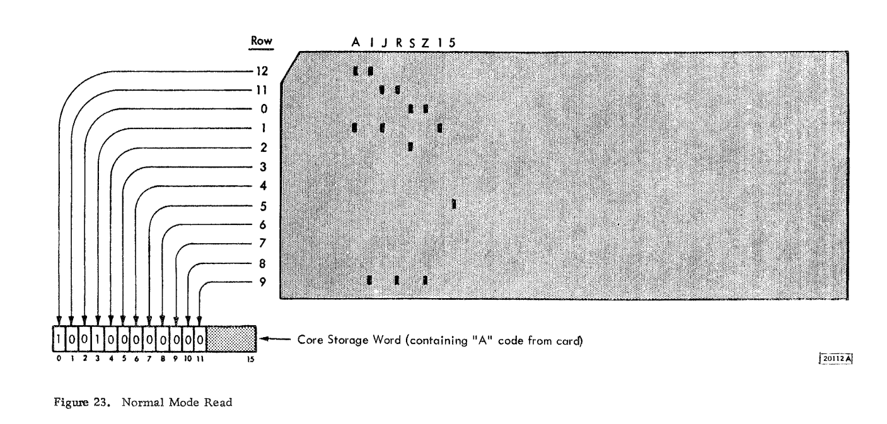
@boot_card_load.png
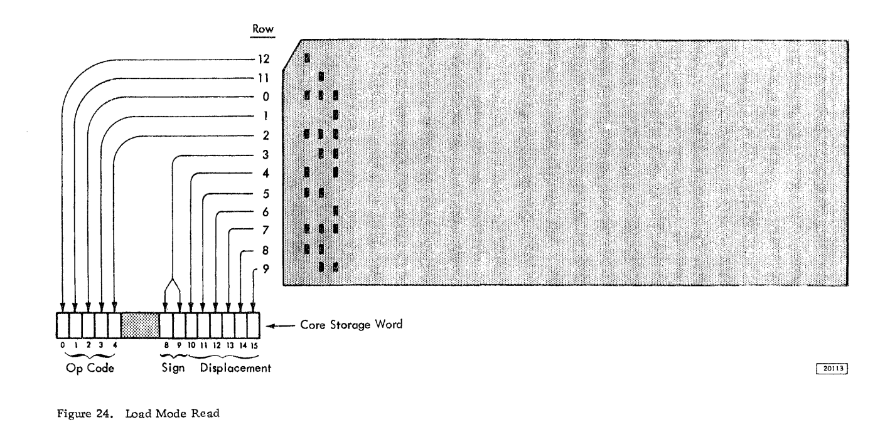
DISK
----
* 1130 Forth's kernel loads from disk sectors
* Depends on IBM's "Disk Monitor System"
* Uses LIBF calling convention
- Compact one word entrypoint
- Arguments in adjacent memory
- Saves space / complexity
- Linker/loader stores names in 5 x 6-bit characters
- Calls DISK1 (used), and PRNT1 (unused)
- LINK BALO?
* Emulate by converting to a fake pseudoinstruction
- only used in initial startup
* Weird reverse order data
- Would not have figured out without
Charles Anthony's loader as reference
@disk.png
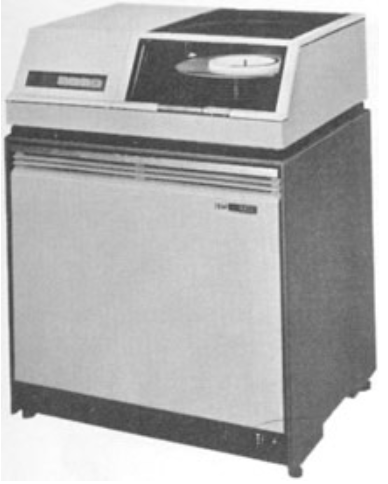
0B3C 00 678009F9 00374 LDX I3 X3
0B3E 20 042624B1 00375 LIBF DISK1
0B3F 0 1000 00376 DC /1000
0B40 0 0C0A 00377 DC BUF
0B41 0 0B2A 00378 DC ERROR
0B42 20 042624B1 00379 BL1 LIBF DISK1
0B43 0 0000 00380 DC /0000
0B44 0 0C0A 00381 DC BUF
0B45 0 70FC 00382 B BL1
0B94 00 678009F9 00433 PR3 LDX I3 X3
0B96 20 176558F1 00434 LIBF PRNT1
0B97 0 2000 00435 DC /2000
0B98 0 0BA5 00436 DC PRN
0B99 0 0B2A 00437 DC ERROR
0B9A 20 176558F1 00438 PR1 LIBF PRNT1
0B9B 0 0000 00439 DC /0000
0B9C 0 70FD 00440 B PR1
09FB 00 66000AF7 00200 START LDX L2 STACK+1 RESTART LOCATION
09FD 00 65000ADF 00201 LDX L1 A
09FF 00 67000B07 00202 LDX L3 INTST
0A01 00 6F000B06 00203 STX L3 R
0A03 00 67000DC0 00204 LDX L3 E2
0A05 00 6F000AD7 00205 STX L3 E1
0A07 0 7304 00206 MDX 3 4
0A08 00 6F000AD8 00207 STX L3 E
0A0A 00 67001860 00208 LDX L3 2*SECT+74
0A0C 00 6F000AF6 00209 STX L3 STACK
0A0E 00 6F000B28 00210 STX L3 C2
0A10 00 670000B3 00211 LDX L3 /B3
0A12 00 6F00000A 00212 STX L3 /A
0A14 00 67000A31 00213 LDX L3 FORTH
0A16 00 6F000AF7 00214 STX L3 STACK+1
0A18 00 67000912 00215 LDX L3 ACCEP
0A1A 00 6F000ADD 00216 STX L3 A-2
0A1C 00 67000C09 00217 LDX L3 BCD+63
0A1E 00 6F000ADE 00218 STX L3 A-1
0A20 00 67000969 00219 LDX L3 SAVE0
0A22 00 6F000ADB 00220 STX L3 A-4
0A24 00 670019FF 00221 LDX L3 /19FF
0A26 00 6F000D83 00222 STX L3 IC
0A28 00 670010EE 00223 LDX L3 /10EE
0A2A 00 6F000C0B 00224 STX L3 SECT
0A2C 0 400E 00225 BSI RECUR
0A2D 00 02053580 00226 LINK BALO
IBM 1130 CONSOLE
----------------
* Repurposed Selectric + IBM 029 Keypunch
- Black and red ribbon under program control
* Keyboard
- Interrupts for keypress
- No enter key!
- Special EOF, ERASE FIELD, BACKSPACE, INT REQ unused
* Switches and Buttons
- Buttons for raw debugging, single stepping, entry
- Switches for power, keyboard/bits, alarms
- 4 or 5 rows of switches
* Numeric and Alpha lights/keys seem to have varied!
- Very confusing, tried both at various points
@ibm1130_whole.png
@ibm1130_console.png
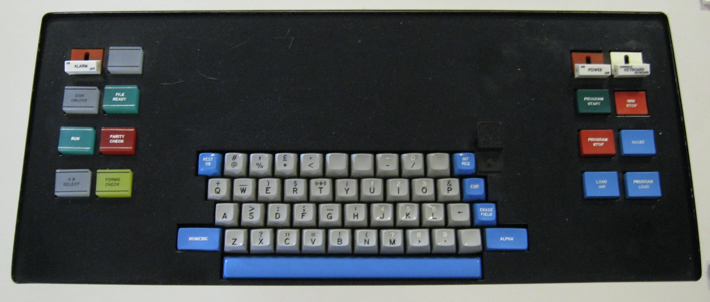
@console_4row.png
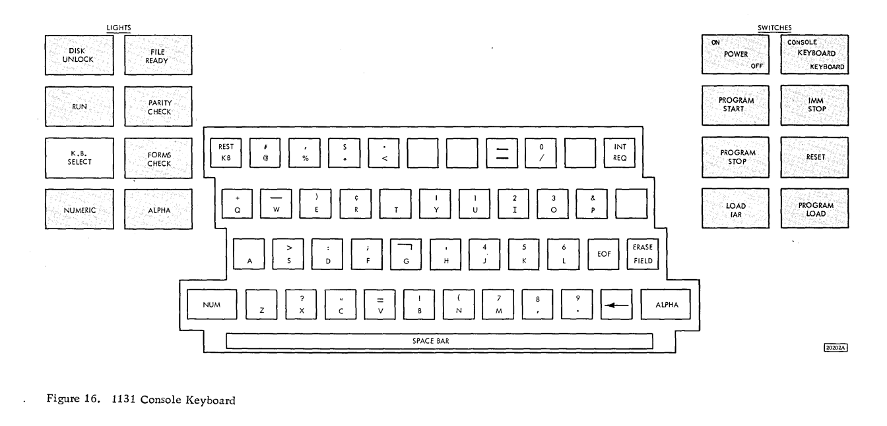
@console_5row.png
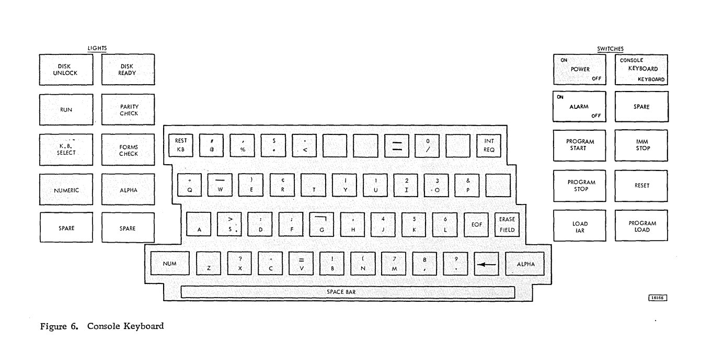
@alpha_numeric_keys.png
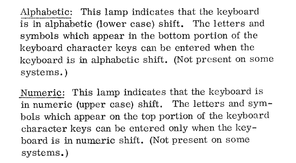
@keyboard_noalpha.png
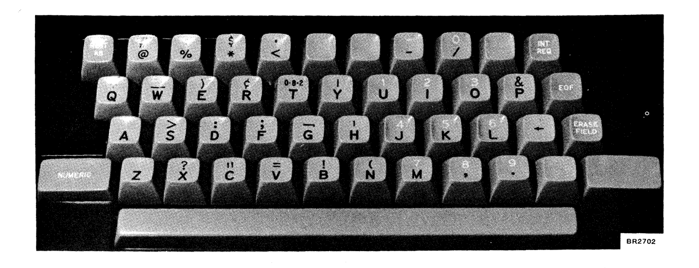
@hold_numeric.png
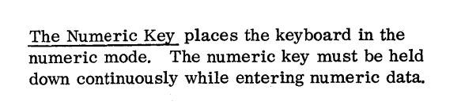
@mode_vs_hold.png
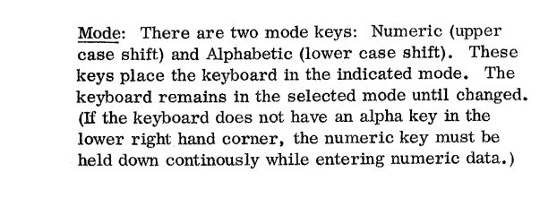
IBM 029 KEYPUNCH
----------------
* Tool for punching and copying 80 column cards
* "programmable" cylinder card to specify card format
- field layout: alpha vs numeric
- optional zero prefix
- automatic column skips
* Some models are numeric only
@keypunch029.png
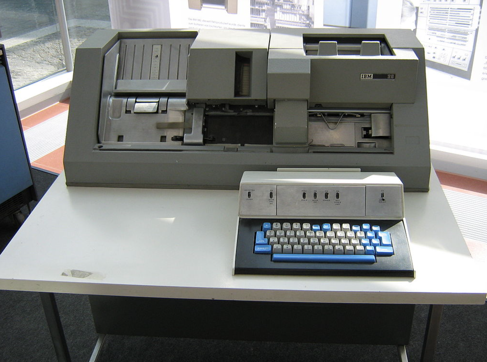
@keypunch029_keys.png
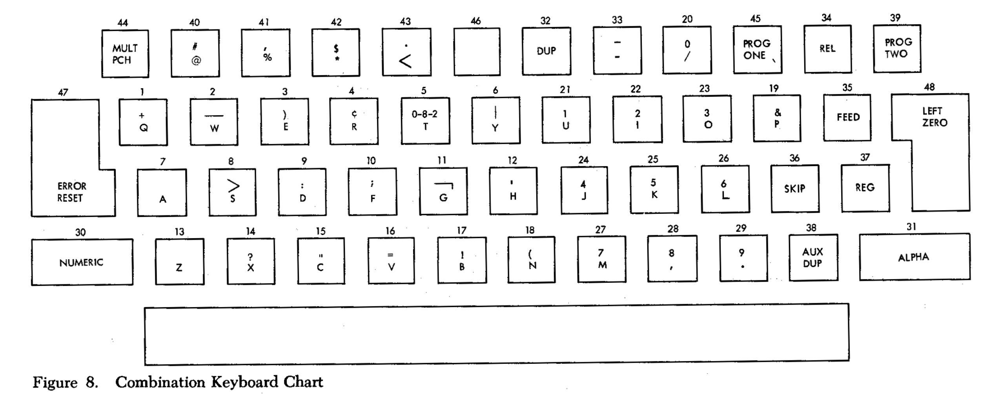
@program_drum.png
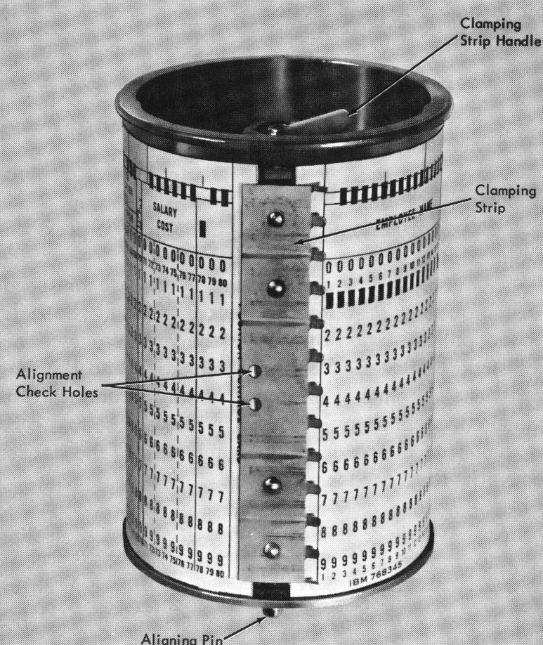
@keypunch029_numeric_note.png
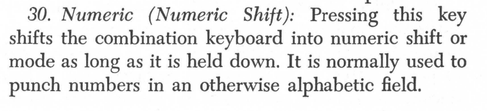
@keypunch029_alpha_note.png
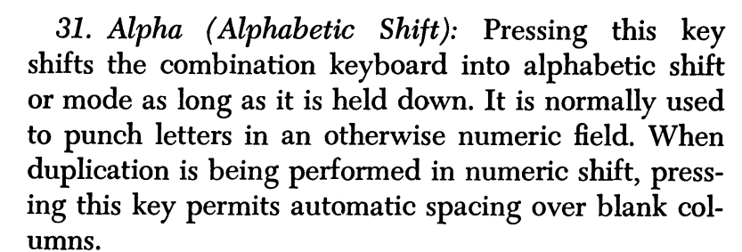
@keypunch029_models.png
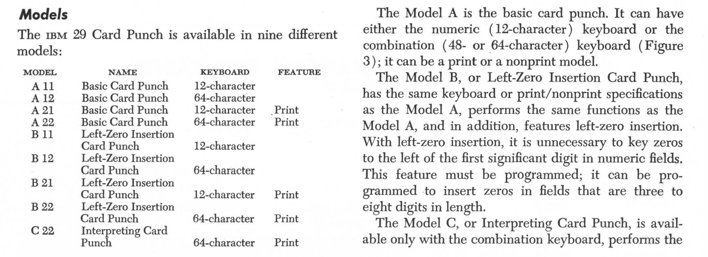
@keypunch029_numeric.png
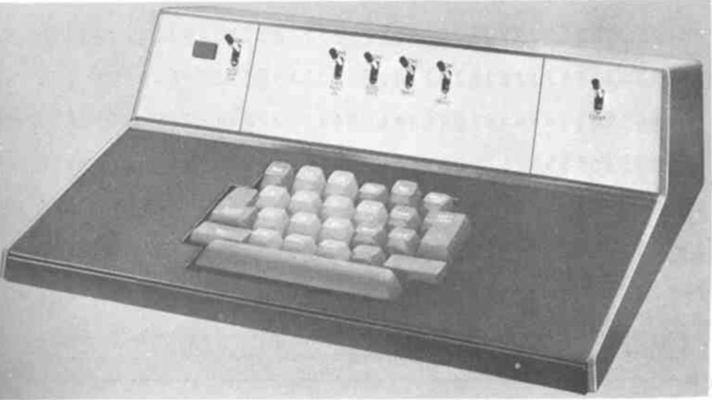
@program_card.png
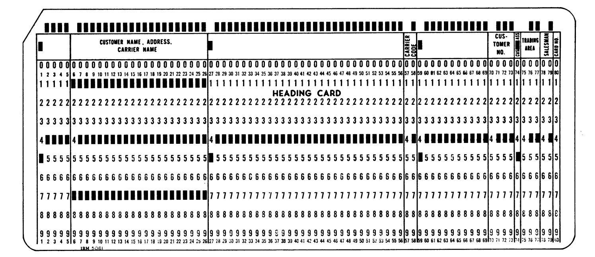
CONSOLE + LIGHTS EMULATION
--------------------------
* Set most of the lights as state changes
- Do not have all the sub-instruction states
- Single step, but not sub-step
* Emulate push buttons directly
* Lots of character sets:
- Card code
- 1443 printer (EBCDIC)
- Linker 6-bit (packed card code)
- Chuck has his own!
CHUCK
0123456789ABCDEFGHIJKLMNOPQRSTUVWXYZ ¢#<(+|&!$*);¬-/,%_>?:.@'="
EBCDIC
0 1 2 3 4 5 6 7 8 9 A B C D E F
4 ¢ . < ( + |
5 & ! $ * ) ; ¬
6 - / ¦ , % _ > ?
7 ` : # @ ' = "
8 a b c d e f g h i ±
9 j k l m n o p q r
A ~ s t u v w x y z
B ^ [ ]
C { A B C D E F G H I
D } J K L M N O P Q R
E \ S T U V W X Y Z
F 0 1 2 3 4 5 6 7 8 9
1130 FORTH
----------
* Amazingly dense 230 lines of Forth code.
* Two classes of words:
- OPERATION / ¢ - like a code word
- Regular words - string to interpret
: NAME def.. ; OR . NAME def... ,
(bug in protoforth loader prevents ;)
* Space OR special character separated
- but only from disk
- Explains 1+ 2*, etc.
* Boots with HELLO THERE instead of OK
- But has $ -> OK inside
1130 FORTH
----------
* ( ) for comments
* 'message string' for strings
* @ is VALUE
* ! is = ( e.g. 123 val= )
* IF..ELSE..THEN but only in code words
* Self modifying words: INTEGER, VECTOR
* Several collisions:
- INTEGER replaced by INTEPRETER
- POSITIVE replaced by POSITION
FORTH REGISTERS
---------------
ACC / EXT - temporary
XR1 - Other quick variables
XR2 - Data stack pointer
XR3 - Current word entry (transient)
0AD7 0 0000 00342 E1 DC TOP OR SYMBOL TABLE
0AD8 0 0000 00343 E DC THE PLACE TO START SEARCHES
0AD9 0 15C4 00344 W1 DC 2*WORD -6
0ADA 0 0000 00345 DC D - 5 SAVE CHARACTER
0ADB 0 0000 00346 DC -4 SAVE OPERATION
0ADC 0 0000 00347 DC C -3 CURRENT CHARACTER
0ADD 0 0000 00348 DC -2 ACCEPT
0ADE 0 0000 00349 DC -1 CHARACTER TABLE
0ADF 0 0000 00350 A DC A XR1 CURRENT CHARACTER
0AE0 0 0000 00351 N DC 1
0AE1 0 0000 00352 DC W 2 WORD CHARACTER
0AE2 0014 00353 WORD BSS 20 3
0AF6 0010 00354 STACK BSS 16
0B06 0 0000 00355 R DC
0B07 0020 00356 INTST BSS 32
0B27 0 1AE0 00357 C1 DC 2*SECT+642+72 RESET CHARACTER
0B28 0 0000 00358 C2 DC CHARACTER BEYOND RECORD
0B29 0 1860 00359 C3 DC 2*SECT+74 VHARACTER BEYOND SECTOR
0B2A 0 0000 00360 ERROR DC 0
0B2B 00 4C800B2A 00361 B I ERROR
DICTIONARY ENTRY
----------------
NAME[0..1]
NAME[1..2]
Code address
0 / x2 string code address / variable
BASIC ENTRY
-----------
09C1 0 0000 00157 ENTRY DC INITIAL ENTRY
09C2 00 44000922 00158 BSI L NEXT
09C4 00 74040AD7 00159 MDM L E1,4
09C6 00 67800AD7 00160 LDX I3 E1
09C8 00 6F000AD8 00161 STX L3 E
09CA 00 74040AD8 00162 MDM L E,4
09CC 0 C103 00163 LD 1 3 WORD
09CD 0 D300 00164 STO 3
09CE 0 C104 00165 LD 1 4 WORD+1
09CF 0 D301 00166 STO 3 1
09D0 00 4C8009C1 00167 B I ENTRY
OPERATION
---------
0AB7 0 0000 00319 OPER DC OPERATION
0AB8 00 440009C1 00320 BSI L ENTRY
0ABA 00 74010D83 00321 MDM L IC,1
0ABC 00 C4000D83 00322 LD L IC
0ABE 0 7201 00323 MDX 2 1
0ABF 0 D200 00324 STO 2
0AC0 0 D302 00325 STO 3 2
0AC1 00 4C800AB7 00326 B I OPER
REGULAR WORD
------------
09D2 0 0000 00168 ENTER DC ADD TO SYMBOL TABLE
09D3 0 40ED 00169 BSI ENTRY
09D4 00 C4000A55 00170 LD L INTER
09D6 0 D302 00171 STO 3 2
09D7 00 C4000D83 00172 LD L IC
09D9 0 1001 00173 SLA 1
09DA 0 8091 00174 A ONE
09DB 0 D1FB 00175 STO 1 -5 D
09DC 0 808F 00176 A ONE
09DD 0 D303 00177 STO 3 3
09DE 0 C016 00178 LD ASAVE SKIP OVER DEFINITION
09DF 0 D1FC 00179 STO 1 -4 SAVE
09E0 00 44000922 00180 EN1 BSI L NEXT
09E2 0 C015 00181 LD COMMA
09E3 00 94000AE2 00182 S L WORD
09E5 00 4C2009EF 00183 BNZ EN2
09E7 0 C1FB 00184 EN3 LD 1 -5 D
09E8 0 1801 00185 SRA 1
09E9 00 D4000D83 00186 STO L IC
09EB 0 C00A 00187 LD ASAV0
09EC 0 D1FC 00188 STO 1 -4 SAVE
09ED 00 4C8009D2 00189 B I ENTER
09EF 0 C007 00190 EN2 LD DOT
09F0 00 94000AE2 00191 S L WORD
09F2 00 4C2009E0 00192 BNZ EN1
09F4 0 70F2 00193 B EN3
09F5 0 0962 00194 ASAVE DC SAVE
09F6 0 0969 00195 ASAV0 DC SAVE0
09F7 0 3024 00196 DOT DC /3024 SEMICOLON
09F8 0 3424 00197 COMMA DC /3424 ,
CALLING
-------
* Return stack, PUSH + PULL but for something else
* Each call stores Entry,
Character in Entry, ACCEPT function
INTERPRET
---------
0A55 0 0A56 00250 INTER DC *
0A56 0 0000 00251 DC INTERPRET
0A57 00 C4000AD8 00252 LD L E
0A59 00 D4800B06 00253 STO I R
0A5B 00 6F000AD8 00254 STX L3 E
0A5D 00 74010B06 00255 MDM L R,1
0A5F 0 C1FD 00256 LD 1 -3 C
0A60 00 D4800B06 00257 STO I R
0A62 00 74010B06 00258 MDM L R,1
0A64 0 C303 00259 LD 3 3
0A65 0 D1FD 00260 STO 1 -3 C
0A66 0 C1FE 00261 LD 1 -2 ACCEPT
0A67 00 D4800B06 00262 STO I R
0A69 00 74010B06 00263 MDM L R,1
0A6B 0 C003 00264 LD ARETR
0A6C 0 D1FE 00265 STO 1 -2 ACCEP
0A6D 00 4C800A56 00266 B I INTER+1
SEMICOLON (COMMA)
-----------------
0A70 0 0000 00268 COM DC END INTERPRET
0A71 00 74FD0B06 00269 MDM L R,-3
0A73 00 67800B06 00270 LDX I3 R
0A75 0 C301 00271 LD 3 1
0A76 0 D1FD 00272 STO 1 -3 C
0A77 0 C302 00273 LD 3 2
0A78 0 D1FE 00274 STO 1 -2 ACCEPT
0A79 0 C300 00275 LD 3
0A7A 00 94000AD8 00276 S L E
0A7C 00 4C880A70 00277 BNP I COM
0A7E 0 C300 00278 LD 3 0
0A7F 00 D4000AD8 00279 STO L E
0A81 00 4C800A70 00280 B I COM
Converse of Modern Forth
------------------------
* Parsing of "normal" words is deferred to runtime
- No indirect-threaded virtual instructions
- Conditionals instead manipulate the parse stream
( n -- ) NONZERO
( n -- ) FALSE
( n -- ) POSITIVE
* But still Hyper Static Global Envirornment
- You can't use a word before it is defined
* How would loops have worked?
- Loops and conditionals in OPERATIONs are more conventional
- Main loop is done with callbacks + OPERATIONs
Other Words
-----------
NEXT - Parse next word
DO - Lookup word (from next)
LOC - Get code location for a word
LOC
---
0A83 0 0000 00281 LOC DC LOCATION OF CODE
0A84 00 44000922 00282 BSI L NEXT
0A86 00 44000993 00283 BSI L DO
0A88 0 C302 00284 LD 3 2
0A89 0 7201 00285 MDX 2 1
0A8A 0 D200 00286 STO 2
0A8B 00 4C800A83 00287 B I LOC
DO (Called Find in FORTH)
-------------------------
0993 0 0000 00120 DO DC INTERPRET WORD
0994 00 67800AD8 00121 LDX I3 E
0996 0 73FC 00122 DO1 MDX 3 -4
0997 0 C300 00123 LD 3
0998 00 4C980993 00124 BZ I DO
099A 0 9103 00125 S 1 3 WORD
099B 00 4C200996 00126 BNZ DO1
099D 0 C301 00127 LD 3 1
099E 0 9104 00128 S 1 4 WORD+1
099F 00 4C200996 00129 BNZ DO1
09A1 00 4C800993 00130 B I DO
BLOCK
-----
0B3B 0 0000 00373 BLOCK DC 0 NEXT BLOCK
0B3C 00 678009F9 00374 LDX I3 X3
0B3E 20 042624B1 00375 LIBF DISK1
0B3F 0 1000 00376 DC /1000
0B40 0 0C0A 00377 DC BUF
0B41 0 0B2A 00378 DC ERROR
0B42 20 042624B1 00379 BL1 LIBF DISK1
0B43 0 0000 00380 DC /0000
0B44 0 0C0A 00381 DC BUF
0B45 0 70FC 00382 B BL1
0B46 00 74010C0B 00383 MDM L SECT,1
0B48 00 C4000B27 00384 LD L C1
0B4A 0 D1FD 00385 STO 1 -3 C
0B4B 00 D4000B28 00386 STO L C2
0B4D 00 4C800B3B 00387 B I BLOCK
VARIABLES
---------
0ACF 0 0000 00336 INTEG DC DECLARE INTEGER
0AD0 00 67800AD8 00337 LDX I3 E
0AD2 0 C0D1 00338 LD ADDR
0AD3 0 D302 00339 STO 3 2
0AD4 0 40D0 00340 BSI ADDR+1
0AD5 00 4C800ACF 00341 B I INTEG
....
0AA4 0 0AA5 00305 ADDR DC *
0AA5 0 0000 00306 DC PLACE ADDRESS ON STACK
0AA6 0 7201 00307 MDX 2 1
0AA7 00 6F00096D 00308 STX L3 TEMP
0AA9 00 7403096D 00309 MDM L TEMP,3
0AAB 00 C400096D 00310 LD L TEMP
0AAD 0 D200 00311 STO 2
0AAE 00 4C800AA5 00312 B I ADDR+1
( NOT ORIGINAL! - ADDED FOR TESTING! )
: NUMBUF 20 VECTOR ; NUMBUF
: EMIT 100 * NUMBUF 1 + = NUMBUF WTC 1 TYPE ;
OPERATION ERAW 0 LS FF MS LOC TYP CALL RETURN
: CR 8100 ERAW ; : RRR RED ERAW ; : BBB BLACK ERAW ;
: DIGIT 0F AND EMIT ; : SIXF 10 / SWAP ;
: NN BBB SIXF SIXF SIXF DIGIT DIGIT DIGIT DIGIT RRR CR ;
OPERATION FND LOC NEXT CALL LOC FIND CALL 3 LOAD 1 MS 0 SS RETURN
OPERATION EXE 0 LS FF MS 3 STORE 2 BSI X3 I RETURN
OPERATION OVER FF LS 1 MS 0 SS RETURN : 2DUP OVER OVER ;
OPERATION ISNEG NEGATIVE CONDITION RETURN
: MIN 2DUP - ISNEG SWAP SWAP DROP ; : +VAL + VALUE ;
: SEE DUP 3 +VAL SWAP DUP 7 +VAL SWAP 3 +VAL - FFF AND 50 MIN MESSAGE ;
: SP 2 VALUE ; : SP0 1 VECTOR ; SP0 SP SP0 =
: DEPTH SP SP0 VALUE - ; : NAME 2 * 4 TYPE ;
( END TESTING CODE )
DEMO
----
https://flagxor.github.io/forth1130/
QUESTIONS❓
🙏
Thank you!